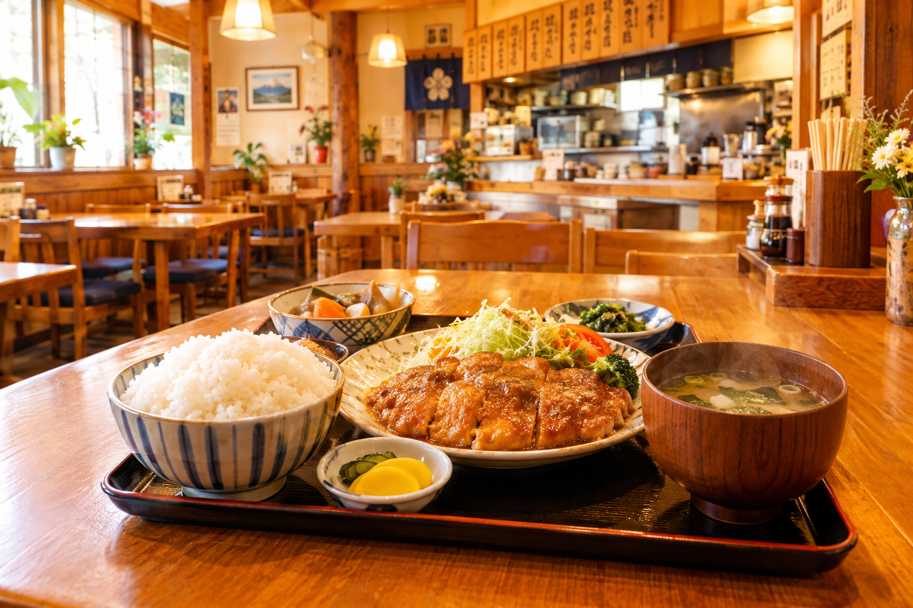
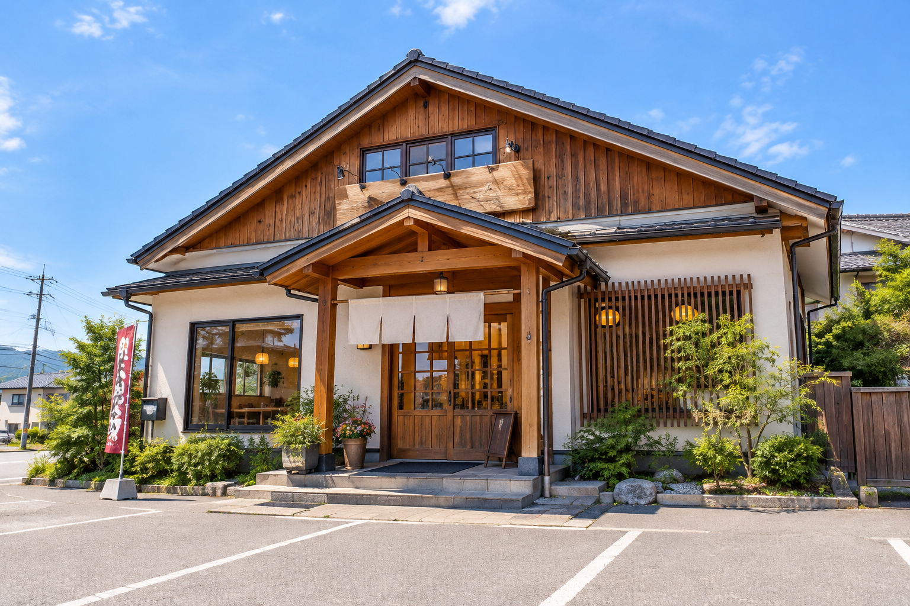
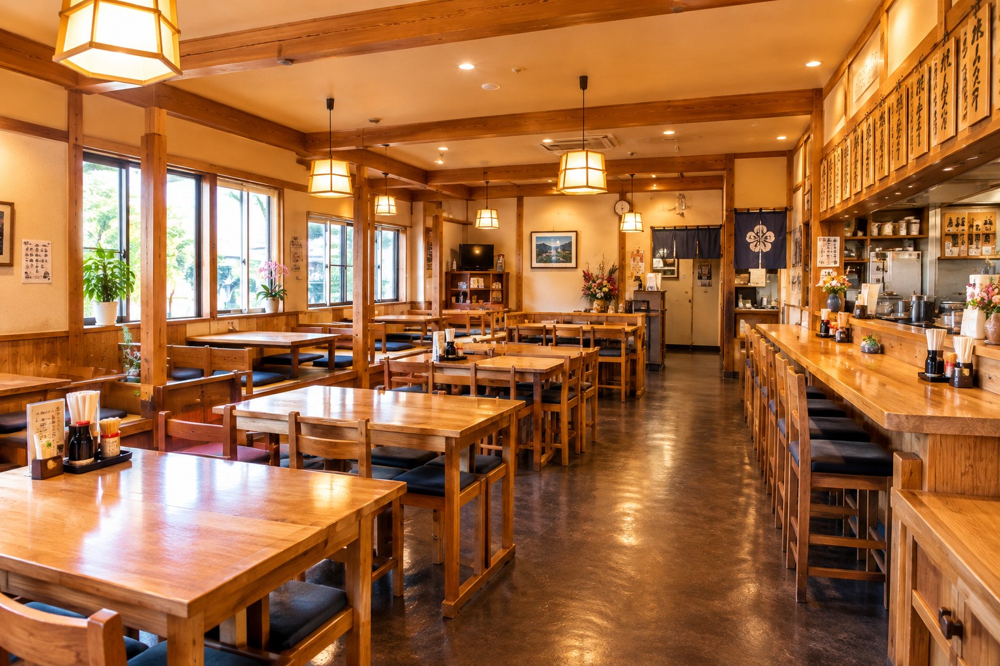

定食屋 仁亭 JINTEI
サクサク衣とジューシーな鶏肉。
看板の鶏唐サラダ定食をはじめ、
800〜1,000円の家庭的な定食を昼も夜も。
仁亭とは
山形市馬見ケ崎の定食屋。
木のぬくもりを感じる、家庭的な雰囲気のお店です。
サクサクの衣とジューシーな鶏肉で評判の鶏唐サラダ定食が看板。
ロースカツ、生姜焼き、ハンバーグなど、
約800〜1,000円で味わえる定食がずらりと揃います。
看板の鶏唐サラダ定食
サクサクの衣とジューシーな鶏肉。ボリュームがありながら食べやすい一品です。
約800〜1,000円
家庭的な定食をお手頃な価格で。昼も夜も気軽にお立ち寄りいただけます。
木のぬくもりの店内
カウンター・テーブル・座敷。木製の内装で、温かみのある家庭的な雰囲気です。
鶏唐サラダ定食
サクサクの衣とジューシーな鶏肉。
酸味のあるドレッシングで、ボリュームがあっても食べやすい。
鶏唐サラダ定食
仁亭の看板メニュー
サクサクの衣とジューシーな鶏肉で評判の、仁亭の看板メニュー。鶏もも肉を使い、醤油とニンニクの風味を効かせた下味が特徴です。
揚げたての唐揚げに酸味のあるドレッシングを合わせた構成で、ボリュームがありながら食べやすく仕上がっています。
-
01
サクサクの衣、ジューシーな鶏肉
食感と肉汁の両方が楽しめる、評判の看板メニューです。
-
02
醤油とニンニクの効いた下味
鶏もも肉に、醤油とニンニクの風味をしっかり効かせています。
-
03
酸味のあるドレッシングで食べやすく
唐揚げにドレッシングを合わせ、ボリュームがあっても最後まで飽きずに。
お店の様子
木の温かみを感じる、家庭的な店内。
カウンター・テーブル・座敷でお待ちしています。


店舗情報
山形市馬見ケ崎、駐車場あり。
そば処 春馬と同じ敷地内にあります。
営業案内
夜 17:00〜21:00
※夜は20:30までとする情報もあり。ご来店前にご確認ください
※祝日の場合は営業し、翌火曜日が休み
※個室はありません
アクセス
山形県山形市馬見ケ崎3丁目14-3
※そば処 春馬と同じ敷地内
※全面禁煙。一部喫煙スペースありとの情報もあり
お支払いは現金のみとなります。
ご来店お待ちしています
サクサク、ジューシーな鶏唐サラダ定食。
800〜1,000円の家庭的な定食を、
昼も夜も、お気軽にどうぞ。
※営業時間: 昼11:00〜14:00／夜17:00〜21:00
※定休日: 月曜日（祝日の場合は営業、翌火曜日休み）
※現金のみ／駐車場あり／テイクアウト対応あり（要確認）